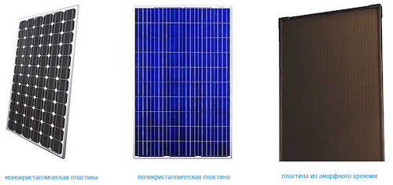
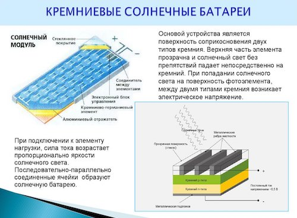
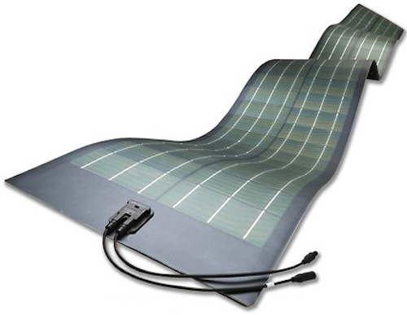

Дополнительная классификация
Существует еще целый ряд признаков, позволяющих классифицировать солнечные
батареи. Среди них большое значение имеет расположение атомов кремния в кристаллическом элементе.

Существует еще целый ряд признаков, позволяющих классифицировать солнечные батареи.
Среди них большое значение имеет расположение атомов кремния в кристаллическом элементе.
- Монокристаллические. Для их изготовления применяется кремний высокой чистоты, получаемый
промышленным способом. КПД таких батарей составляет 14-17%.
- Поликристаллические. Этот вид солнечных батарей изготавливается из кремниевого расплава,
медленно охлаждаемого до нужного состояния. Данный способ значительно дешевле, а полученный
кремний приобретает ярко синий цвет. КПД таких элементов ниже, в пределах 10-12%.
- Панели на основе аморфного кремния. Они относятся к категории тонкопленочных, поскольку кремний
наносится на основу как очень тонкая пленка и покрывается защитным материалом. Данный метод
изготовления считается наиболее дешевым и простым, но эффективность таких изделий ниже, чем в
любом кристаллическом варианте. Компоненты панелей постепенно теряют свои качества. КПД
находится на уровне 5-6%.
Солнечные панели на основе кремния
Наибольшей популярностью пользуются элементы, основой которых является моно-кристаллический кремний.
Производство осуществляется методом литья, а новые технологии дают возможность получать совершенно
чистые кристаллы кремния. Твердение расплава происходит во взаимодействии с кристаллической затравкой.
В процессе охлаждения и застывания образуются цилиндрические монокристаллы, диаметр которых составляет от
13 до 20 см, а длина – 2 м. Стержни разрезаются на отдельные части. Толщина каждого кружка выдерживается
в пределах 0,2-0,4 мм. Из этих кружочков образуются ячейки. Для одной панели их оптимальное количество
составляет 36 единиц.

Наиболее качественные кристаллы позволяют увеличить КПД до 19%. В таких монокристаллах атомы
сориентированы таким образом, что подвижность электронов заметно возрастает. Весь кремний пронизан
металлической сеткой, выполняющей функцию электродов. Для установки панели предусмотрена алюминиевая
рамка, после чего модуль закрывается противоударным защитным стеклом. Полученная поверхность бывает
черного или темно синего цвета.
Монокристаллические кремниевые солнечные батареи отличаются надежностью и долговечностью. Расчетный срок
эксплуатации составляет 50 лет. Отсутствие движущихся деталей существенно упрощает монтаж. Они
используются в районах с большим количеством солнечных дней, где обычное энергоснабжение работает с
перебоями. Высокая эффективность панелей определяется их высокой стоимостью. В большинстве случаев их
использование экономически выгодно и целесообразно.
В более дешевых батареях используется мультикристаллический кремний, в состав которого входят различные
монокристаллические решетки, собранные в случайном порядке. Срок эксплуатации таких устройств
планируется не более 25 лет, а их КПД и стоимость гораздо ниже, чем у классических панелей.

Существует еще один вариант солнечных батарей, в которых использовались элементы поликристаллического
кремния. Он также отличается низкой стоимостью, а его кристаллы находятся в агрегатном состоянии,
обладают
различной формой и ориентацией. В отличие от монокристаллов, они окрашены в собственный ярко синий цвет.
Производство таких компонентов постоянно совершенствуется и в настоящее время их параметры лишь
незначительно отличаются от лидирующих конструкций.
Тонкопленочные технологии для солнечных панелей
Изобретение технологии с использованием тонкой пленки дало возможность постепенно вытеснить
кристаллические солнечные панели, приближаясь к ним по своим техническим характеристикам. Основные
преимущества таких изделий заключаются в их невысокой себестоимости, которая становится определяющим
фактором в конкурентной борьбе. Модули нового типа отличаются гибкостью, легкостью и эластичностью, что
дает возможность устанавливать их практически на любые поверхности.
Основными компонентами пленочных систем являются алюминий, аморфный кремний, теллурид кадмия и другие
виды полупроводников, из которых состоит вся конструкция. Все элементы закрепляются на полимерной пленке
и составляют единое целое. Количество вырабатываемой электроэнергии напрямую зависит от площади изделия.

В самом начале в тонкопленочных элементах применялся аморфный кремний, наносимый на подложку. Такая
конструкция, где используются эти компоненты служила совсем недолго, а КПД составлял всего лишь 4-5%. С
улучшением технологии эти показатели возросли, в том числе и КПД, который достиг 8%. Тонкопленочные
солнечные батареи третьего поколения увеличили этот показатель до 12% и стали вполне
конкурентоспособными по отношению к кремниевым панелям. Таких показателей удалось достичь за счет
селенида меди-индия и теллурида кадмия, нашедших свое применение еще в первых портативных зарядных
устройствах.